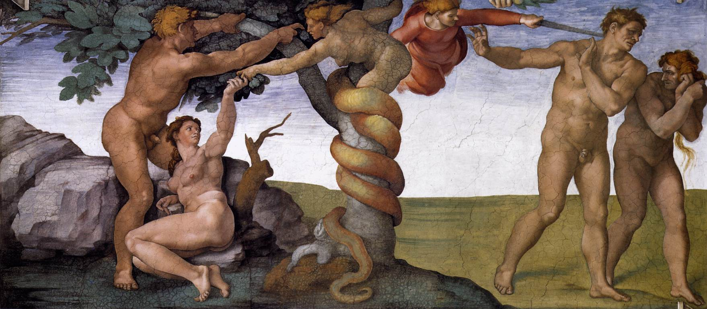
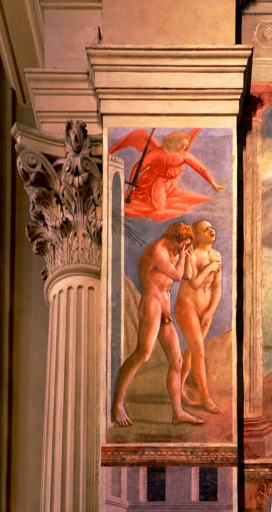

La palabra «pecado» no está en Génesis 3. Tampoco la palabra «caída». Y después del jardín, nadie en la Biblia hebrea vuelve sobre Adán para explicar el mal.
Llamamos a ese pasaje «la Caída». Es un nombre tan establecido que parece descriptivo: ocurre algo, algo se rompe, y de ahí para abajo. Pero el nombre no está en el texto, y lo que el texto sí tiene es más raro y más interesante de lo que el nombre permite ver.
La entrega anterior de esta etapa demostró que la serpiente del Edén no era Satán, y que hicieron falta siete siglos para que alguien lo dijera. Esta serie demuestra la otra mitad: que la caída tampoco era el pecado original, y que para llegar de una a otro hicieron falta cuatro siglos, una práctica bautismal, un debate judío que ya estaba abierto y el género gramatical de una palabra latina.
Conviene empezar por lo que no hay, porque es sorprendentemente mucho.
No aparece la palabra «pecado». La raíz hebrea ḥṭʾ, que es la del vocabulario del pecado, no está en Génesis 3. Su primera aparición en el libro llega un capítulo más tarde, en Génesis 4:7, y no es sobre Adán: es Yahvé hablando a Caín, «el pecado está agazapado a la puerta». Es un dato de concordancia, no una interpretación. El relato del jardín no clasifica lo ocurrido con las palabras que el hebreo tiene para eso.
No aparece «caída». No hay en Génesis 3 ningún término hebreo que signifique caer aplicado al episodio. El lapsus latino y la ptōsis griega son categorías de la recepción posterior. Y el detalle que lo remata: «la Caída» como nombre del pasaje es un uso cristiano. La tradición judía no llama así a ese capítulo.
Adán no es maldecido. Las maldiciones explícitas del texto, con la raíz que significa maldecir, recaen sobre dos destinatarios: la serpiente, en 3:14, y el suelo, la ʾadamah, en 3:17. El hombre y la mujer reciben sentencias —dolor, trabajo, una relación torcida—, pero el texto no los declara malditos. La diferencia importa: una sentencia describe consecuencias, una maldición cambia el estatuto.
Y la inmortalidad previa no se afirma. Que Adán y Eva fueran inmortales antes de comer es una inferencia, no algo que el texto diga; de hecho 3:22 —«no vaya a tomar también del árbol de la vida y viva para siempre»— se lee más naturalmente como que todavía no habían accedido a la inmortalidad. Es la lectura de James Barr, muy influyente y no unánime.

La pregunta es legítima y tiene tres respuestas vivas en la investigación.
Una dice que no hay caída en absoluto: el relato es etiológico, explica por qué se trabaja la tierra con esfuerzo, por qué se pare con dolor, por qué morimos y por qué estamos separados de los animales. Es la línea de Claus Westermann y de Barr. Otra sostiene que sí hay una pérdida narrativa real —se pierde el acceso al jardín y al árbol de la vida— aunque no una corrupción de la naturaleza. Y la tercera lee una caída en germen que los capítulos 6 al 11 desarrollan, con el diluvio y Babel, como una historia de deterioro progresivo: es la lectura de quienes toman Génesis 1-11 como una unidad redaccional.
Las tres son defendibles y la discusión sigue. Lo que no está en discusión es esto: nada en Génesis 3 habla de transmisión hereditaria de la culpa ni de corrupción de la naturaleza humana. Ninguna de las tres posiciones lo encuentra ahí.
Aquí está el dato que suele desconcertar más, y es puramente estadístico. Después de la genealogía de Génesis 5 y de la lista de 1 Crónicas 1, el Adán del jardín no reaparece en toda la Biblia hebrea como explicación del mal humano. Ni una vez. No hay un solo texto del canon hebreo que vuelva sobre el fruto prohibido para decir «de ahí viene lo que nos pasa».
Hay una excepción aparente, Oseas 6:7, donde aparece kə-ʾādām, que puede traducirse «como Adán», «como hombres» o incluso «en Adán» tomándolo por un topónimo. El texto es oscuro, y un versículo oscuro no sostiene una doctrina.
Y en cambio sí hay lo contrario, dicho con una claridad que no deja lugar a dudas. Ezequiel 18 es un capítulo entero dedicado a refutar un proverbio que el propio profeta cita para negarlo: «los padres comieron uvas verdes y los hijos tienen la dentera».
El alma que peca, ésa morirá. El hijo no cargará con la iniquidad del padre, ni el padre cargará con la iniquidad del hijo: la justicia del justo será sobre él, y la maldad del malvado será sobre él.Ezequiel 18:20
Deuteronomio 24:16 formula el mismo principio en clave jurídica: «cada uno morirá por su propio pecado». Dos textos, dos géneros, un principio: la culpa no se hereda.
Presentar Ezequiel 18 como «la» postura del judaísmo bíblico sería tan inexacto como lo contrario. La Biblia hebrea no es unívoca en este punto: Éxodo 20:5 y 34:7, y Deuteronomio 5:9, afirman que Dios «visita la iniquidad de los padres sobre los hijos hasta la tercera y cuarta generación». Hay una tensión interna real, y Ezequiel 18 —probablemente exílico— y Deuteronomio 24:16 representan un polo frente a la fórmula de la culpa transgeneracional. Lo defendible es que la Biblia hebrea contiene una corriente explícita, desarrollada y nada marginal contra la herencia de la culpa. No que sea su única voz.
Si el mal humano no viene de una herencia, ¿de dónde viene? El judaísmo tenía una respuesta elaborada, y no se parece en nada a la que vendría después.
Es el yeṣer ha-raʿ, la «inclinación mala», y su base está en el propio Génesis: en 6:5, «todo yeṣer de los pensamientos de su corazón era sólo mal», y en 8:21, «el yeṣer del corazón del hombre es malo desde su juventud». Pero el detalle decisivo es cómo funciona la doctrina, y son tres rasgos que conviene tener juntos.
Primero: el yeṣer malo está emparejado con un yeṣer ha-tov, una inclinación buena. No es una tara única, es una tensión. Segundo: forma parte de la creación de Dios, no es consecuencia de ningún delito ancestral. Y tercero, que es el que lo explica todo: es la condición del mérito. Sin inclinación al mal no habría elección real, y sin elección real no habría nada que recompensar.
Puesto al lado de la concupiscentia agustiniana, el contraste es estructural en los tres puntos. El yeṣer es creado y no heredado de un pecado; es dual y no unívocamente corruptor; y lo que pide no es un sacramento sino disciplina, estudio y arrepentimiento.
El texto clásico está en el Eclesiástico, hacia el 180 a.C., y es de una claridad casi provocadora: «no digas: por causa del Señor me he apartado»; «no digas: él me ha hecho errar»; y en 15:14, «lo dejó en poder de su propia inclinación». La palabra griega que ahí traduce yeṣer es diaboulion, «deliberación», «designio». Es decir: en este texto, el yeṣer es la capacidad de elegir, no un defecto de fábrica.
Con una cautela obligatoria: el mismo libro contiene, en 25:24, «de la mujer tuvo comienzo el pecado, y por ella morimos todos». Se cita a menudo como prueba de una doctrina de pecado heredado, y no puede usarse así: su interpretación está en disputa —puede ser una referencia a Eva o una sentencia misógina genérica sobre la mujer mala del contexto—, y leerlo como doctrina obligaría a poner al Eclesiástico en contradicción consigo mismo diez capítulos antes.
Y ahora la parte mejor. Después de la destrucción del Templo, a finales del siglo I, dos apocalipsis judíos casi contemporáneos se hacen la misma pregunta sobre Adán y llegan a conclusiones contrarias.
4 Esdras es el más oscuro de los dos, y a ratos suena desesperado. En 3:20-22 lamenta que Dios no quitara a los hombres el cor malignum, el corazón malo, «para que tu ley diese fruto en ellos». Y en 7:118 pronuncia la frase que resume el libro: «Oh Adán, ¿qué has hecho? Porque, aunque fuiste tú quien pecó, la caída no fue tuya sola, sino también nuestra, de los que somos tus descendientes.»
Es el texto judío antiguo que más se acerca a algo parecido al pecado original. Y contiene, en el mismo pasaje, el detalle que lo separa de él por completo: 4 Esdras 3:21 dice que Adán ya estaba cargado con el corazón malo cuando transgredió. El cor malignum precede a su pecado; no se deriva de él. Lo que Adán transmite es el efecto —la muerte, la «enfermedad», la debilidad—, no la creación de la tara. Es exactamente la lógica inversa a la agustiniana.
2 Baruc, escrito en el mismo ambiente y sobre el mismo problema, responde al contrario. Concede el efecto sin discutirlo: Adán «trajo la muerte prematura sobre todos». Y niega la causalidad moral con una frase que merece leerse dos veces:
Adán no es, pues, la causa, sino sólo de su propia alma; sino que cada uno de nosotros ha sido el Adán de su propia alma.2 Baruc 54:19
Consecuencia física heredada por un lado, culpa personal no heredada por el otro, y la distinción hecha con precisión de cirujano.
«Oh Adán, ¿qué has hecho? Porque, aunque fuiste tú quien pecó, la caída no fue tuya sola, sino también nuestra.» Hereda el cor malignum y la «enfermedad» permanente. Pocos se salvan.
«Adán no es la causa… cada uno de nosotros ha sido el Adán de su propia alma.» Hereda la muerte prematura, sí; la culpa, no. Se salvan los que guardan la Ley.
La inclinación mala está creada por Dios, emparejada con la buena, y es la condición del mérito. No se hereda de un delito: se combate con disciplina, Torá y arrepentimiento.
«No digas: él me ha hecho errar.» Lo dejó en poder de su propia inclinación, y delante del hombre están la vida y la muerte. Aquí el yeṣer es la capacidad de elegir.

De aquí salen tres formulaciones, y dos de ellas son falsas.
Es falso decir que el judaísmo no tenía nada parecido: 4 Esdras existe, y dice lo que dice. Es falso decir que Pablo simplemente heredó la doctrina judía sobre Adán: no había una doctrina, había una discusión con posiciones incompatibles. Y lo que sí es defendible es esto: Pablo escribe dentro de un espacio de debate judío ya abierto sobre el alcance del acto de Adán, y lo que hace en Romanos 5 es intervenir en ese debate —ni inventar ni repetir.
Queda por precisar qué es exactamente lo que no hay. La doctrina occidental del pecado original tiene cuatro elementos: culpa imputada al recién nacido; transmisión por generación biológica; privación de la visión de Dios como pena de esa culpa; y necesidad de un rito sacramental para remitirla. No hay ninguna fuente judía antigua donde los cuatro aparezcan juntos. Lo que hay son efectos heredados de Adán en los dos apocalipsis, y una inclinación creada —no heredada de un delito— en la línea rabínica.
Y un dato de recepción que cierra el capítulo con una ironía perfecta. El judaísmo rabínico normativo —Mishná, Talmudes, midrashim— nunca desarrolló una doctrina de pecado heredado: se quedó con el yeṣer, la libertad de elección y el arrepentimiento. Los dos apocalipsis quedaron fuera del canon rabínico. La corriente judía más adánica sobrevivió porque la copiaron los cristianos. 4 Esdras nos ha llegado en latín, siríaco y etíope; el original hebreo o arameo se perdió.
Así que el material estaba disponible, disperso y sin decidir. Lo que viene ahora es cómo se decidió, y el sitio donde se decidió es más pequeño de lo que nadie esperaría: dos palabras de una carta de Pablo, y la gramática de la lengua a la que se tradujeron.
Es dato firme que la raíz hebrea ḥṭʾ no aparece en Génesis 3 y que su primera ocurrencia en el libro es Génesis 4:7, a propósito de Caín; que no hay término de caída aplicado al episodio y que «la Caída» es un nombre de la recepción cristiana; que las maldiciones explícitas recaen sobre la serpiente y el suelo, no sobre Adán; y que nada en el capítulo habla de herencia de culpa. Lo es que el Adán del jardín no reaparece en la Biblia hebrea como explicación del mal, y que Ezequiel 18 y Deuteronomio 24:16 formulan expresamente el principio de no transmisión. Lo son el contenido y la estructura del yeṣer ha-raʿ, el anti-determinismo de Eclesiástico 15:11-20, y las citas de 4 Esdras 3:20-22 y 7:118 y 2 Baruc 54:15 y 54:19. Y lo es el dato de recepción: los dos apocalipsis quedaron fuera del canon rabínico y se conservaron por transmisión cristiana.
Debate abierto: si hay o no una «caída» en el relato, con tres posiciones vivas —etiológica, de pérdida narrativa, y de caída en germen desarrollada en Génesis 6-11—. La inmortalidad previa de Adán y Eva, que Barr lee como no afirmada por el texto, en una posición influyente y no unánime. El sentido de kə-ʾādām en Oseas 6:7, que es oscuro. La interpretación de Eclesiástico 25:24, que no se usa aquí como prueba. Si hay determinismo real en 4 Esdras, donde la posición dominante es que el texto mantiene deliberadamente la tensión. Y la tesis reciente de Umbarger, que propone la sarx paulina como cognado teológico del yeṣer: publicada y revisada, pero minoritaria. Las referencias rabínicas concretas sobre el yeṣer se citan aquí en bloque y no versículo a versículo, porque no se han cotejado una por una en la edición Vilna.
Nada de esto dice si el relato del jardín es verdadero, ni si una doctrina construida siglos después es legítima como doctrina. Son preguntas distintas y este artículo no entra en ellas. Lo que hace es separar dos capas: lo que el texto hebreo dice, y lo que cuatro siglos de lectura le fueron añadiendo. Y conviene notar algo que suele perderse: la discusión judía que aquí se describe no era tibia ni vaga. Era una discusión seria sobre el mal, con posiciones incompatibles defendidas con argumentos. Describirla como un vacío que el cristianismo vino a llenar sería tan injusto como inexacto.